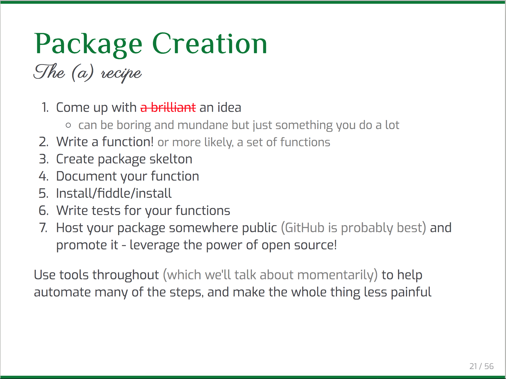
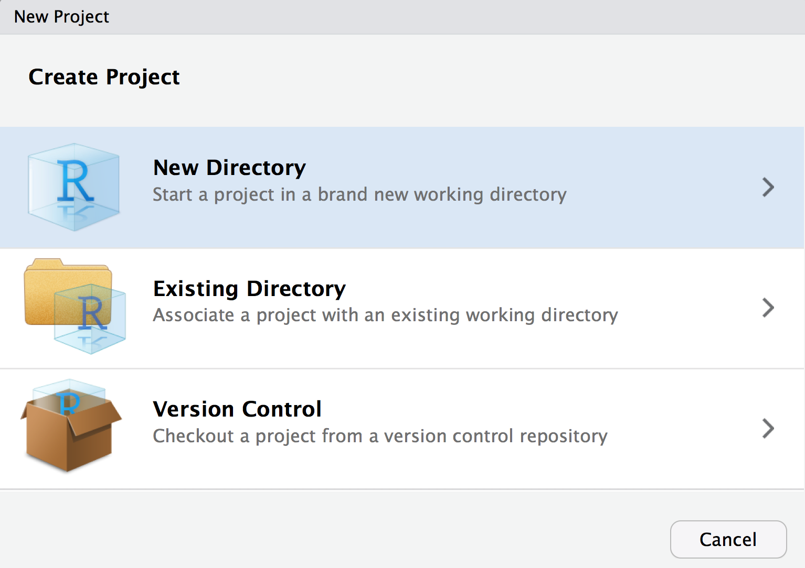
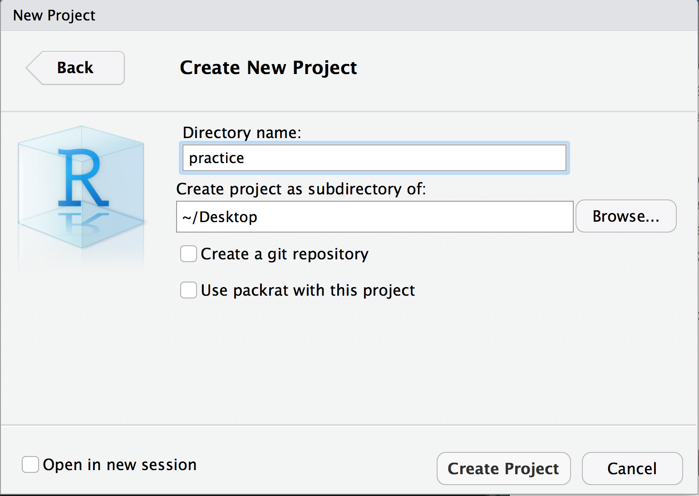
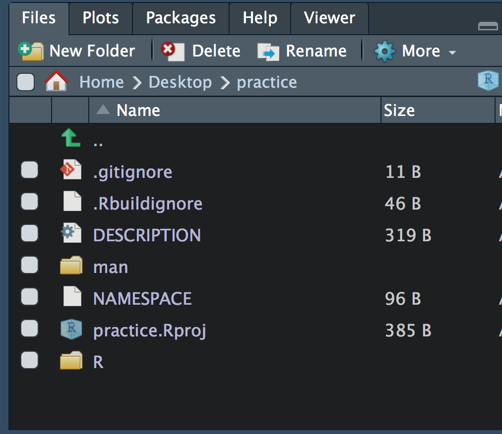
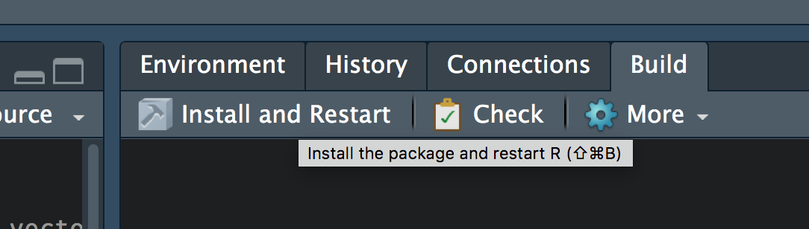

Writing an R Package Basics (and why I think you should)
Contents
On April 10, 2018, I gave a talk entitled Developing your first R package: A case study with esvis for the Eugene R Users Group. Although I discussed my esvis package, the focus of the talk was really on tools and tips for developing R pacakges. In this post, I’ll go over some of the content in that talk, and discuss why I think you should develop an R package.
Writing functions is the hard part
The first point I want to make is that compiling functions into a package is not overly difficult, particularly given all the tools that are now available to help make the process as pain-free as possible (e.g., {usethis}, {devtools}, {roxygen2}). Writing functions is the hard part, but you can do that too.
Let’s say you have some code that looks like this
library(tidyverse)
mtcars %>%
summarize(n_obs = n(),
mean = mean(mpg),
sd = sd(mpg))
## n_obs mean sd
## 1 32 20.09062 6.026948
and we want to extend this code so we can calculate these same descriptives for any numeric column in any data frame. How? We write a function!
To replicate the code above exactly as a function, we’d have to use tidyeval (see my use case here). Instead, I’ll just move to some base functions to make it a little easier. I also regularly have to worry about missing data, so I’ll extend it a bit to give us some information about the amount of missingness.
describe <- function(var) {
miss <- sum(is.na(var))
var <- na.omit(var)
valid <- length(var)
mn <- mean(var)
stdev <- sd(var)
data.frame(n_miss = miss,
n_valid = valid,
mean = mn,
sd = stdev)
}
The above creates a new function, called describe, which sums the number of missing cases (this works because logicals are implicitly coerced to numeric, where TRUE == 1 and FALSE == 0), removes all missing data, calculates the length of the variable (vector) with missing data removed, calculates the mean, calculates the standard deviation, and then compiles it all into a data frame. Let’s test it out
describe(mtcars$mpg)
## n_miss n_valid mean sd
## 1 0 32 20.09062 6.026948
describe(iris$Sepal.Width)
## n_miss n_valid mean sd
## 1 0 150 3.057333 0.4358663
set.seed(04242018)
describe(c(rnorm(1e5, 100, 3), rep(NA, 500)))
## n_miss n_valid mean sd
## 1 500 100000 99.98689 3.007097
So all appears well.
How do we compile into a function?
In my talk, I recommended taking the following steps

There was some initial confusion on the twitterverse about what I meant by Step 3. To be clear, I am 100% recommending you use usethis::create_package, which I would consider a package skeleton, but that should not be confused with utils::package.skeleton, which I would argue is much less friendly to the developer.
So, following the above, we have an idea (basic descriptive stats), we have a function, so now we need to create the package skeleton.
Create a package skeleton with usethis
The way I would recommend doing this, so you don’t have to worry about paths at all is:
- Create a new R Project in a new directory

- Select new project (not R Package)

- Give your project whatever name you want your package to have

- Run
usethis::create_package("."), which says “Create a package here”. It will then prompt you to make sure you want to overwrite the existing project you just created. Just say yes, and it will launch a new project (you can close the old one).

If all has gone well, you should see a new batch of files and folders in the directory.

Notice that one of these folders is called “R”. This is where all your functions go. Save them in a .R script, and we’ll move on to Step 4: Document your function.
Document your function
Function in R packages generally include documentation. For example if you run ?lm you will get the documentation for the lm function for linear modeling, which looks like this:

We’re going to annotate our R script for our function using specialized comments. Those comments will then be automatically rendered into the documentation pages, like the one shown above, by the {roxygen2} package. The comments are #', rather than just pound signs, and then you’ll describe specific parts of the function using parameters like @param, @return, @export, and @examples. These four, specifically, are probably the most common, and most important. @param describes the arguments, @return describes what the function will return, @export makes the function available upon loading the pacakge (rather than an internal function), and @examples provides example usage of the function. Below is an example of how I’ve documented our function written earlier.

If you look in the \man folder there is currently nothing there. However, after writing the documentation, we can run devtools::document() and it will render the specialized comments into the documentation we need (i.e., there will be documents in the \man folder corresponding to the documentation for our function).

Install/fiddle/install
At this point, we’re almost ready to go. If you click on the “Build” tab you will see a “Install and Restart” option.

Just clicking this button will install the package on your computer, and restart your local R session. You can now run ?describe and you’ll see the documentation for your function (see below). You can also play around with the function, run tests, etc.

What’s the benefit?
The above basically helps get you started with writing R packages, but it’s obviously not everything you need to know. But what’s the benefit of all this? I would argue a few things. First, if you’re writing functions and using them more than once, it’s a great way to stay organized and make your functions more accessible. Part of what is so cool about the above, is that now, in any R session, regardless of our working directory or anything else, we should be able to call library(practice) and the describe function will be available to us.
Second, as you start to write packages, you will naturally run across stumbling blocks. Although these can be frustrating at times, they will actually help push your knowledge and make you a a better programmer.
Third, and finally, particularly if you house your package on GitHub, sharing the functionality of your package with others will be easier (which may help people become more interested in R and the work you’re doing). Further, if you house your code on GitHub, you’ll be open and transparent (which sometimes can be a little scary, but the R community is incredibly welcoming), and others may help you make your code better! Leverage the power of open source!
It doesn’t have to be a package for release
When I first announced I was giving this talk on twitter, Alison Hill helped promote it by taking a screen capture of my recipe slide, above. This prompted the following comment by Maëlle Salmon
I think this is an excellent point, and Maëlle even has a blog post about this topic. In that post she states
I won’t speak about the benefits of building an R package for yourself, or a research compendium to make your work reproducible.
which is also an important qualifier. What I’d like to advocate for, however, is exactly those things. I think you should try to build an R package for multiple reasons. It’s fun. It’shallenges your skillset. And, most importantly, if it can help you, or those you work with, then I ‘s worth it. Maëlle was talking specifically about packages that will go on to be released on CRAN, but I think th(and I’m pretty sure she would agree) ere are many times when writing an R package can be a great idea, even if release to CRAN is never the goal. .
Author Daniel Anderson
LastMod 2018-04-24